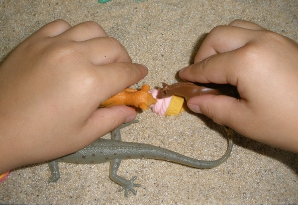

초등학교 3학년은 학업과 사회적 관계에서 중요한 전환점에 위치한 시기로, 이 시기 초등 학생들은 학교 적응과 또래 관계에서 다양한 도전을 경험한다. 학교 환경에서의 적응력과 또래 관계의 질은 학생들의 정서적 안정과 학업 성취에 중요한 영향을 미친다.
1. 학교 적응 문제
1) 새로운 학업 요구와의 조화
초등학교 3학년은 학업 과제가 복잡해지고, 독립적으로 수행해야 하는 과제가 늘어나는 시기이다. 학생들은 수학적 추론, 논리적 사고, 그리고 독서와 작문의 심화된 요구에 적응해야 한다. 이러한 변화는 학생들에게 스트레스를 줄 수 있으며, 적절한 지원이 없으면 학업 태도와 동기에 부정적인 영향을 미칠 수 있다.
2) 교사와의 관계
학생들은 교사와의 긍정적인 관계를 통해 학교 생활에 대한 만족도를 높이고, 학습 동기를 강화한다. 그러나 교사와의 소통에서 어려움을 겪거나 부정적인 경험을 할 경우, 학교 적응에 문제가 생길 수 있다. 이는 교사의 지도가 학생의 개인적 필요에 부합하지 않을 때 더 두드러진다.
3) 학교 규칙과 환경에 대한 적응
학생들은 학교에서의 규율과 규칙에 적응하는 데 어려움을 겪을 수 있다. 예를 들어, 시간 관리, 수업 중의 집중, 그리고 과제 제출과 같은 규칙 준수는 일부 학생들에게 큰 부담으로 작용할 수 있다. 이는 특히 자기 통제 능력이 아직 충분히 발달하지 않은 학생들에게 문제로 나타난다. 사회적 상호작용과 집단 활동이 증가함에 따라, 일부 아동은 친구 사귀기, 집단 내 역할 찾기 등에서 어려움을 겪을 수 있으므로 사회적 기술 향상 프로그램이나 또래 상담, 그룹 활동을 통해 아동이 사회적 상호작용 기술을 개발할 수 있도록 해야 한다.
2. 또래 관계의 특징
1) 또래 집단의 중요성
초등학교 3학년 학생들은 또래 집단 내에서의 관계를 매우 중요하게 여긴다. 친구와의 상호작용은 자아 존중감과 사회적 기술 발달에 중요한 역할을 한다. 이 시기의 학생들은 집단 활동과 협동 과제를 통해 서로의 감정을 이해하고 조율하는 방법을 배운다.
2) 갈등과 경쟁
또래 간의 갈등과 경쟁은 이 시기의 학생들에게 흔히 나타나는 현상이다. 예를 들어, 친구와의 의견 차이, 놀이에서의 경쟁, 그리고 인기 있는 학생들 사이에서의 관계 문제는 사회적 긴장감을 유발할 수 있다. 이러한 갈등 상황은 학생들이 문제 해결 능력을 배울 수 있는 기회이지만, 적절히 관리되지 않을 경우 부정적인 영향을 미칠 수 있다.
3) 사회적 배척과 따돌림
사회적 배척이나 따돌림은 초등학교 3학년 학생들 사이에서도 발생할 수 있다. 이는 특정 학생이 또래 집단에서 소외감을 느끼고, 정서적 어려움을 겪게 하는 주요 원인이 된다. 이러한 문제는 학생의 사회적 기술 부족, 의사소통 문제, 또는 개별적인 행동 특성에서 비롯될 수 있다.

3. 학교 적응과 또래 관계를 위한 지원 방안
1) 학교 적응 지원
학교는 초등3학년 학생들이 새로운 학업 요구와 규율에 적응할 수 있도록 다각적인 지원을 제공해야 한다. 예를 들어, 학습 지도를 위한 개별화된 교육 계획, 시간 관리와 과제 수행을 돕는 전략, 그리고 학생의 성취를 격려하는 긍정적인 피드백이 필요하다.
2) 교사-학생 관계 강화
교사는 학생들과의 신뢰 관계를 구축하고, 학생 개개인의 필요와 강점을 이해하는 데 중점을 두어야 한다. 이를 통해 학생들은 교사로부터 정서적 안정감을 얻고, 학습 동기를 유지할 수 있다. 또한, 교사는 또래 간 갈등이 발생했을 때 중재자로서의 역할을 효과적으로 수행해야 한다.
3) 사회적 기술 교육
아동은 또래 집단 내에서 수용되고 싶은 강한 욕구로 인해 부정적인 또래 압력에 굴복하거나, 자신의 가치관과 다른 행동을 할 수 있다. 이에 대응 방안은 자아존중감을 높이고, 자신의 가치와 신념을 지키면서 타인과 건강하게 상호작용하는 방법을 가르친다. 학교 교육 과정에 사회적 기술 교육을 포함시키는 것은 또래 관계의 질을 높이는 데 중요하다. 예를 들어, 협력, 의사소통, 공감, 그리고 문제 해결 능력을 개발하는 프로그램은 학생들이 긍정적인 사회적 상호작용을 할 수 있도록 돕는다.
4) 가정과의 협력
부모는 학생들이 학교에서의 어려움을 해결하는 데 중요한 역할을 한다. 교사와 부모는 또래 관계에서의 왕따나 사회적 배제 문제를 인식하고 적극적으로 개입하여 안전하고 긍정적인 학교 환경을 조성해야 한다. 또한, 부모는 아동에게 갈등 해결 기술과 자기 옹호 기술을 가르쳐야 한다. 부모는 자녀의 학교 생활에 관심을 가지고, 자녀의 감정과 경험에 대해 열린 대화를 나누어야 한다. 또한, 부모와 교사 간의 긴밀한 소통은 학생들의 학교 적응과 또래 관계를 지원하는 데 필수적이다.
결론
초등학교 3학년은 학업과 사회적 관계에서 중요한 변화를 경험하는 시기이다. 학교 적응과 또래 관계에서의 문제는 학생들에게 정서적, 학업적 영향을 미칠 수 있으므로, 이를 효과적으로 지원하기 위한 다각적인 접근이 필요하다. 학교와 가정, 그리고 지역 사회는 협력하여 학생들이 긍정적인 학교 경험을 할 수 있도록 도와야 한다. 사회적 기술 훈련, 긍정적인 상호작용을 촉진하는 학교 활동, 그리고 자신감을 높일 수 있는 기회를 제공한다. 특히, 학교 적응을 위한 체계적인 지원과 또래 관계를 개선하기 위한 사회적 기술 교육은 이 시기의 학생들에게 필수적인 요소이다.
참고문헌
Berk, L. E. (2017). Development Through the Lifespan. Pearson Education.
Piaget, J. (1972). The Psychology of the Child. Basic Books.
Erikson, E. H. (1993). Childhood and Society. W. W. Norton & Company.
Vygotsky, L. S. (1978). Mind in Society: The Development of Higher Psychological Processes. Harvard University Press.
김재은 (2019). "초등학생의 사회적 발달과 학교 환경의 상관관계." 교육학 연구, 45(3), 123-142.
신혜영 (2020). "또래 관계와 학교 적응 간의 연관성." 초등교육연구, 39(2), 87-108.
2025.01.19 - [이론] - 초등3학년 신체적, 인지적, 사회적 및 정서적 특성
초등3학년 신체적, 인지적, 사회적 및 정서적 특성
초등학교 3학년은 학교생활이나 사회생활 적응이 되는 시점이다. 발달에서 중요한 전환기 중 하나로, 신체적, 인지적, 사회적, 그리고 정서적 측면에서 두드러진 변화를 경험하는 시기이다. 이
think-sis.co.kr